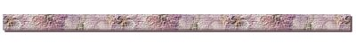
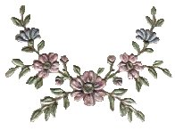
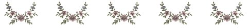
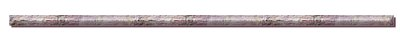
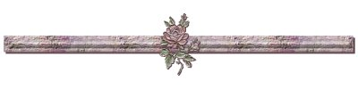

|

French version
HOME
ORIGINS
ENGAGÉ
MARRIAGE
TRAVEL
FAMILY
DEATH
SÉBASTIENNE
DESCENDANTS
SOURCES

SIGN
MY GUEST
BOOK
| |
|

|
|
Several
questions arise about Sébastienne Veillon...
the first being her date of birth.
The
documents do not agree, one locates the birth of Sébastienne
between 1616 and 1626. But
the most probable date is between 1616 and 1618.
She is thus a woman of approximately thirty years when
she marries Mathieu Choret and embarks with him for New-France
in 1647
Her
life in this new country is one of hard labour, a woman works as
much as her husband to clear the land and prepare their
homestead. Even
when she is pregnant a woman’s work continues.
Sébastienne gives birth to seven children, including
twins.
|
| NEIGHBORS,
FRIENDS AND PARENTS
|
|
The
social fabric of Sébastienne is based above all on the
neighbors and friends. Parents
perhaps also came to join her in the country.
Perhaps a cousin... a Judith Veillon makes a stay in
New-France.
Judith
Veillon is the daughter of Pierre Veillon and Renee Girard, we
do not know the bond between Pierre Veillon and Maixent Veillon,
father of Sébastienne. Unquestionably
they are contemporary and live in the same area of France.
Judith is born on January 3, 1613 in La Rochelle and
marries Rene Ménard on July 9, 1636 in the same place.
Two years after the departure of Sébastienne, in 1649,
Judith gives birth to a girl in La Rochelle, Barbe Ménard.
Judith
probably comes to New France with her daughter.
Unquestionably, Barbe
marries Antoine Vermet on August 26, 1669 on the Island of
Orleans, in theSainte-Famille parish.
They raise a family and live there all their life.
|
| "TIGHTLY
KNITTED" |
|
Quebecers
often use this expression which pertains to the several lines of
ascendants going back to the 17th century.
It could not be differently since the settlement was
begun from a core of
people who made alliances together and had a many
descendants.
As
one looks at the data of the census of 1666 and 1667, one finds
neighbors of Mathieu and Sébastienne whose surnames correspond
to that of the future wives of their sons. There are often several alliances between two families.
Let
us take as example, the LOIGNONS.
Pierre Loignon is from the Perche in
France. Single, he
is hired by
Noël Juchereau on March 4, 1647, the very same day when Mathieu
and Sébastienne marry in La Rochelle.
He thus embarks for Canada at the same time as them.
Perhaps they meet while crossing the Atlantic on the same
boat.
Pierre
Loignon marries Francoise
Roussin in 1652 in Quebec.
They
live not far from Mathieu and Sebastienne at
Notre-Dame-des-Anges, according to the census of 1666.
During the birth of their first child, they ask Mathieu
and Sébastienne to be godfather and godmother of their daughter.
The baptism takes place on September 7, 1653 in Quebec.
The child takes the name of her godmother, which is
common in those days. There
is thus a Sébastienne
Loignon.
Pierre
and Francoise have more than twelve children.
One of their girls, Anne,
will marry in 1676 Joseph Choret, the second son of Mathieu.
Their youngest son, Charles-Joseph,
will marry in 1695 the daughter of Jeanne Choret, therefore the
grand-daughter of Mathieu.
Another Loignon girl, Jeanne,
will marry in 1686 Jean Gagnon, son of Robert ancestor of the
line of Gagnons. Without
counting that Robert Choret will marry a Paradis which is the
sister-in-law of Nicolas Roussin, brother of Francoise.
Etc, etc,, it is a network of alliances between all these
families of first colonists.
|
|

|
|
Sébastienne
is widowed in March of 1664.
She
has seven children between the ages of two and fifteen.
The eldest son, Robert, is not old enough to play the
role of head of the family.
The only solution for Sébastienne is to re-marry quickly.
|
 SECOND
MARRIAGE
OF SÉBASTIENNE
WITH
PIERRE AUFROY
|
|
August
25, 1664, in the parish Our-Lady of Quebec, Sébastienne marries
Pierre Aufroy. They
signed a marriage contract the very same day in front of the
notary Paul Vachon.
The
son of Pierre Aufroy and Hilaire Milsandre, Pierre was born
around 1635 at Notre-Dame-de-bon-Port in Sable d’Olonne in
Poitou. He
immigrates to the country with a young nephew,
Nicolas Menanteau, born around 1649, in the same parish as him.
The uncle and the nephew are confirmed together in Quebec
on March 23, 1664. Nicolas
will also marry a widow and will establish himself in the Island
of Orleans as a farmer.
Pierre
is recently in the country since he is
hired by the surgeon Jean Madry and we saw that the
contracts of service last three years.
In the summer 1664 Pierre is not a free man, his contract
is not finished. Also,
Madry is opposed to the publication of the banns for the
marriage of Pierre and Sébastienne.
The cause is carried in front of the Sovereign Council.
The Council returns a decision on August 16 1664 in favor
of Pierre recognizing "freedom for him so that he may
become accustomed to this country and take a wife there".
|
|

|
|
WHY
THIS MARRIAGE?
|
|
There
is a difference of nearly twenty years in age between Sébastienne
and Pierre. One can
wonder which interest each one found in this marriage and if
they really cohabited together.
|
| In
the case of Sébastienne,
it is necessary for her to ensure the survival of her family.
And for this reason, a head of family is essential.
At that time, a woman is regarded as a minor for all of
her life, initially under the supervision of her father, then of
her husband. It is
not acceptable socially that
Sébastienne remains alone on the farm with her young children
and even less that she takes a volunteer, which would have given
her a bad reputation. There
must be, officially at least, a head of family.
In any case, to remain alone is economically
impossible, the work on the farm being too difficult. We
already saw that the romantic aspect is an absent notion of
marriage at that time and that the couple, in a country of
colonization, is the base of the family.
The widowers and widows with young children all re-marry
quickly; the "reconstituted families" are numerous,
the second union often resulting in even more children.
Only the older widowers and widows can remain in this
state. Thus the
only daughter of Sébastienne, Jeanne, will not remarry
following the death of her husband, being able to count on her
adult children to work the farm and take care of her.
|
|
In
the case of Pierre,
this marriage releases him from his contract of commitment and
allows him to settle in the country.
Sébastienne inherited half of the goods of Mathieu,
which is something. In 1664 there are very few women to marry in the colony; the
population of approximately 3,000 inhabitants dispersed along
the St-Laurent includes mostly men.
The gradual arrival of the "Filles du Roi" has
begun only the previous year, and they are not numerous and
choose already established men, which is not the case of Pierre
Aufroy.

|
|
The
doubts about the real cohabitation of Sébastienne and Pierre
come from the many inconsistencies which one finds in the
documents:
(it
is clearly understood that these documents are not 100% reliable)
- Census 1666 Côte Notre-Dame-des-Anges
Bastienne
Veillon, 40, widow of Mathieu Choret;
Robert, 18; Joseph,
14; Jeanne, 13;
Pierre and Ignace, 10;
Jean, 8; Pierre, 4; Michel
Pottier, 21, hired help.
Where
is Pierre Aufroy? Sébastienne
is said to be 40 years old and to be the widow of Mathieu, she
would live alone with her seven children and a volunteer.
The following year she will state being 50 years old.

- Census 1667 Côte Notre-Dame-des-Anges
Pierre
Aufroy, 30; Sébastienne
Veillon, 50; Pierre
13; Joseph, 18;
Jeanne, 15; Jean,
10; Pierre, 6;
Ignace, 13; 5
cattle, 16 acres in value.
- Census 1667 Island
of Orléans
Pierre
Aufroy, 32; farmer
of the Sire de la Vigne, 12 acres.
In
1667, Pierre is mentioned at two different places, and his age
differs.
Robert Choret, eldest son of Sébastienne, has left the family.
One finds him on a farm of 2 arpents in the Island of
Orleans, in the vicinity of Antoine Dionne and Robert Gagnon,
two ancestors of other lines.
Pierre Loignon is also now settled with his family on the Island
on a large farm of 50 acres.
- Census 1681 Petite Auvergne (in
fact it is always on the same farm of Beauport)
Sébastienne
Veillon (widow Pierre Aufroy) 65;
children: Pierre
and Ignace (twins) 25, Jean 23, Pierre 19;
2 rifles, 8 animals with horns;
20 acres in value.
- Census 1681 County St-Laurent (
Island of Orléans)
Pierre
Auffroy, 46
Nicolas
Menanteau 32; his wife Jeanne Jousselot, 32;
children: Michel
9, Pierre 3, 3 acres of farm in value.
In
1681 Sébastienne is always on the farm of Mathieu, with four of
his still unmarried sons and she is declared widowed of Pierre
Aufroy. The farm continued to be cleared since 4 acres were added.
In
the same census Pierre Aufroy is mentioned as being 46 years old
and living on the island of Orleans with his nephew and his
family. The name of
Pierre appears alone on a line, without mention of family or
goods. Then comes that of his nephew, they thus live together.
- Hotel-Dieu
Hospital Files.
April 25, 1690 Sébastienne makes a stay at the Hospital of Quebec and in
the files it is mentioned there "widow in 1st wedding of
Mathieu Choret and 2nd wedding of Pierre Aufroy".
However,
Pierre Aufroy dies on the Island of Orleans on November 17,
1700.
He
is buried on November 18, 1700 in St-François, Island of
Orleans.
It
seems that the Island was the principal place of residence of
Pierre, initially as a farmer with the service of the Sior of
the Vine, then living with his nephew, the one with which he had
immigrated to the country, Nicolas Menanteau.
Nicolas will die in the Hospital on July 2, 1710.
Why
does Sébastienne declare herself widowed from Piere, even
though she is not?
It’s
a mystery. Make
your assumptions. But
the one being that there were two Pierre Aufroy at the same time seems excluded because it is not mentioned in any
document. It is
assured that there was only one of him even if the orthography
of his name differs sometimes (Offroy, Auffroy), which is
completely current for the time.
|
|
|
| SÉBASTIENNE VEILLON'S DEATH |
|
Sébastienne
dies in Beauport on December 21, 1698.
She thus passed most of her life in New-France, that is
to say more than fifty years, on the farm conceded by the
Jesuits to Mathieu Choret.
The
documents mention that she is 80 years old and that she
"died in childhood".
Today it would be said that she "had fallen back to
childhood". This
state implies that her family had to take care of her during the
last part of her life.
Four
of her children settled on the Island of Orleans, the three
others lived in Beauport, that is to say the two twins, Pierre
and Ignace, and Pierre the Junior.
One of them took over the paternal farm, and Sébastienne
most probably lived with him and his family.
Unquestionable
thing, in 1709, when Gédéon de Catalogne draws up the map of
the area of Quebec, at the request of the government, the
ancestral farm of Mathieu still belongs to a Choret.
|
|

|
|
|